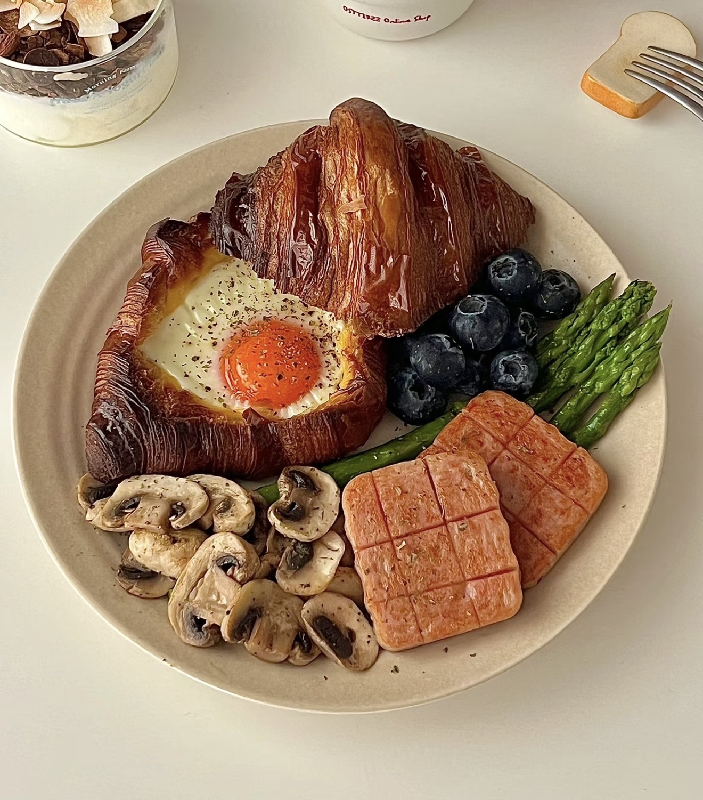

Croissant Egg Breakfast
Buttery croissant with a soft egg, served with shrimp and fresh fruit.
Ingredients
- Croissant
- Egg
- Bacon
- Cheese
- Shrimp
- Avocado
- Blueberries
- Strawberries
- Salt and pepper
- Butter or oil
Directions
- Slice the croissant open.
- Add cheese inside.
- Crack an egg in the center.
- Wrap with bacon.
- Bake or air fry until cooked.
- Cook shrimp until pink.
- Prepare avocado and fruit.
- Plate and serve.